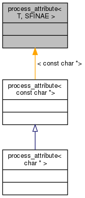

#include <attr.h>
Inheritance diagram for process_attribute< T, SFINAE >:

Collaboration diagram for process_attribute< T, SFINAE >:

Detailed Description
template<typename T, typename SFINAE = void>
struct process_attribute< T, SFINAE >
Partial template specializations to process custom attributes provided to cpp_function_ and class_. These are either used to initialize the respective fields in the type_record and function_record data structures or executed at runtime to deal with custom call policies (e.g. keep_alive).
The documentation for this struct was generated from the following file:
- /home/graduate/wuh20/github/AnalogsEnsemble/CGrid/pybind11/include/pybind11/attr.h